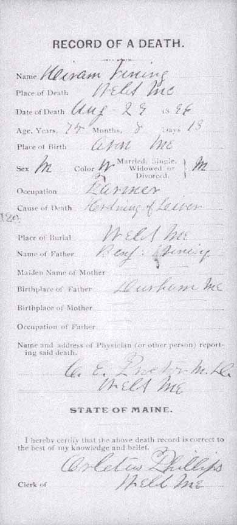
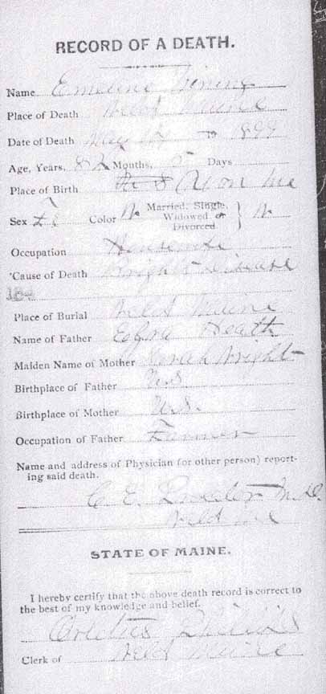
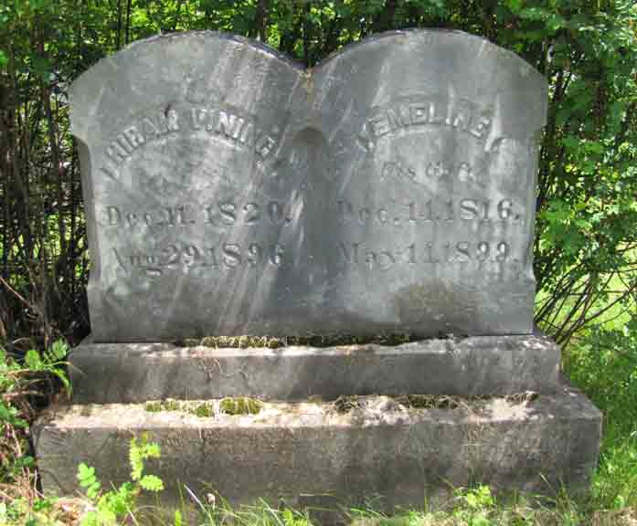
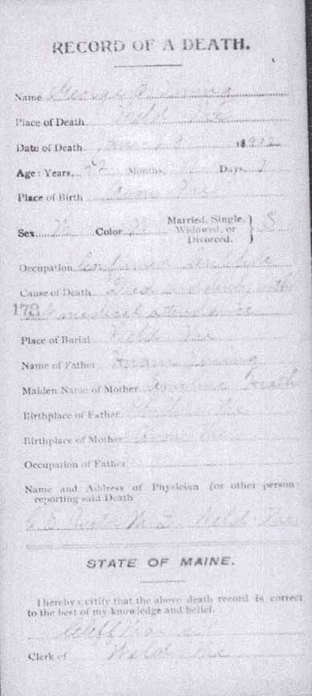
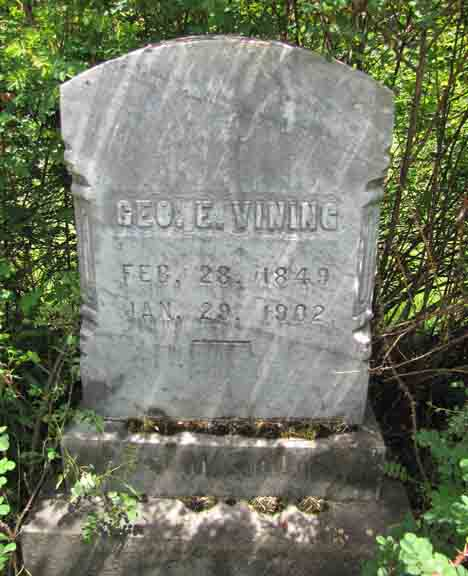

Census Data
| 1850 | 1860 | 1870 | 1880 | 1890 | 1900 | |
| Hiram Vining | 30 | 39 | 49 | 59 | ? | dead |
| Emmeline (Heath) Vining | 32 | 42 | 53 | 63 | ? | dead |
| George E. Vining | 1 | 11 | 21 | 31 | ? | 51 [see note below] |
| Edward Payson Vining | 9 | 18 | living in separate household | |||
| Hiram Emerson Vining | 4 | 14 | 24 | married [and living in separate household?] | ||
| Emma E. Vining | [see note below] | [see note below] | 23 | ? | dead |


Death Data
Death records of Hiram Vining and Emmeline (Heath) Vining (from Maine State Archives):



